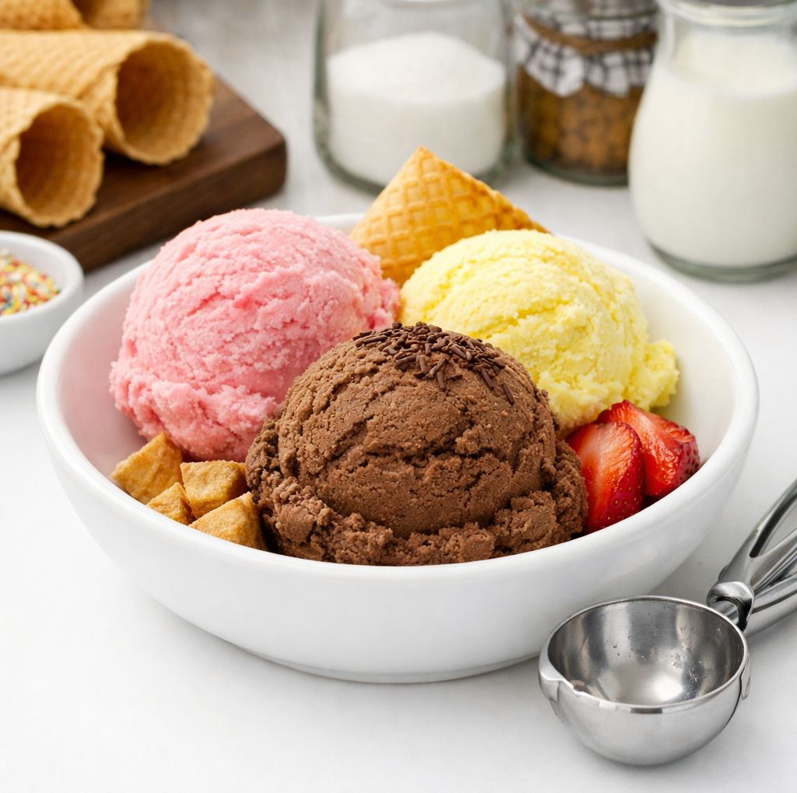

Rahasia Membuat Es Krim Rumahan yang Lembut dan Creamy
Pernahkah anda mencoba membuat es krim di rumah, tapi hasilnya justru keras seperti batu es atau berbutir kasar? Jangan khawatir, anda tidak sendirian! Banyak orang mengira kunci es krim enak hanya ada pada mesin mahal, padahal rahasianya terletak pada ilmu di balik bahan dan tekniknya.

Kali ini, kita akan membongkar dapur rahasia agar es krim buatan anda memiliki tekstur yang lembut, creamy, dan lumer di mulut, persis seperti yang anda beli di gerai mahal. Yuk, simak tips berikut!
1. Kandungan Lemak adalah Kunci Utama
Jangan pernah mengurangi takaran krim (whipping cream) atau susu full cream. Lemak berperan penting untuk memberikan kelembutan dan mencegah es krim membeku terlalu keras.
- Tips: Gunakan rasio antara krim kental (minimal 35% lemak) dan susu cair. Semakin tinggi lemaknya, semakin creamy teksturnya.
2. Manfaatkan Kuning Telur (Metode French Custard)
Jika anda ingin es krim yang kaya rasa, gunakan adonan dasar yang melibatkan kuning telur. Kuning telur mengandung lesitin yang merupakan emulsifier alami. Ini bertugas mengikat lemak dan air, sehingga tekstur es krim menjadi sangat halus dan tidak berair.
- Tips: Masak adonan susu dan kuning telur dengan metode double boiler atau api kecil sampai sedikit mengental, jangan sampai mendidih agar telur tidak bergerindil.
Jika anda tidak suka aroma telur, maka ada bahan-bahan yang bisa menggantikannya:
Tepung Maizena: Larutkan 2-3 sdt maizena dengan susu dingin, masak bersama adonan sampai meletup-letup. Ini akan meniru fungsi kuning telur untuk mengikat air.
Susu Kental Manis: Ganti sebagian gula pasir dengan Susu Kental Manis. Kandungan gulanya yang tinggi dan teksturnya yang kental sangat membantu membuat es krim lembut tanpa banyak telur.
Cream Cheese: Tambahan 50-70 gr cream cheese membuat tekstur sangat creamy dan savory.
3. Gula Bukan Hanya Pemanis, tapi Penjaga Tekstur
Gula berperan penting untuk menurunkan titik beku adonan es krim. Tanpa gula yang cukup, es krim akan membeku menjadi batu yang sangat keras. Selain itu, gula menahan air sehingga tidak membentuk kristal es besar yang membuat tekstur kasar.
- Tips: Jangan terlalu banyak mengurangi takaran gula. Anda juga bisa menggunakan Gula Invert atau sedikit Sirup Glukosa/Maizena yang dimasak untuk menjaga kelembutan tekstur lebih lama.
4. Dinginkan Adonan Semalaman (Ini Penting!)
Seringkali kita terburu-buru memasukkan adonan panas ke dalam mesin es krim. Ini adalah sebuah kesalahan. Adonan harus benar-benar dingin, bahkan lebih baik didinginkan terlebih dahulu di kulkas (bukan freezer) semalaman, minimal 4-8 jam.
Kenapa? Proses pematangan (aging) ini memungkinkan lemak dalam krim mengkristal dengan sempurna dan air terserap sempurna, sehingga saat diaduk (churning), teksturnya akan lebih kental dan creamy.
Jika anda melewati tahap ini, hasil es krim biasanya masih enak, tapi teksturnya tidak akan se-creamy dan sehalus versi profesional.
5. Jangan Lupa "Dry Ice" atau Proses Pengadukan yang Benar
Jika menggunakan mesin es krim, pastikan bowl mesin sudah beku sepenuhnya (biasanya 12-24 jam di freezer). Jika mengaduk manual, anda harus mengaduk dengan rajin setiap 30 menit selama 3-4 jam pertama saat proses pembekuan.
- Tujuannya: Mengaduk memecah kristal es yang mulai terbentuk dan menjadikan teksturnya ringan, bukan padat.
6. Teknik Penyimpanan
Cara menyimpan es krim menentukan hasilnya besok hari. Udara adalah musuh utama yang membuat es krim berbau freezer dan membentuk kristal es di permukaan.
- Tips: Simpan dalam wadah kedap udara. Sebelum menutup rapat, tekan selembar kertas roti atau plastik wrap langsung ke permukaan es krim. Ini mencegah udara menyentuh permukaan es krim dan menjaganya tetap halus.
Membuat es krim lembut adalah seni menggabungkan bahan berkualitas tinggi, kesabaran dalam mendinginkan adonan, dan teknik pengadukan yang tepat. Dengan menerapkan 6 tips di atas, anda sudah satu langkah lebih maju untuk menyajikan dessert bintang lima di rumah.
Resep Es Krim yang Creamy
Bahan-bahan:
- 2 gelas susu cair full cream
- 1 gelas krim kental cair (whipping cream)
- 3 sdm gula pasir (sesuai selera)
- 1 sdt ekstrak vanila
- 3 kuning telur (opsional)
- Pewarna makanan sesuai warna yang diinginkan (contoh: merah muda, cokelat, kuning/krem)
- 2 sdm susu kental manis (opsional, untuk rasa lebih manis dan creamy)
Cara membuat:
- Campurkan susu cair, krim kental dan kuning telur dalam wadah besar.
- Jika pakai kuning telur, adonan dimasak terlebih dahulu. Tambahkan gula pasir dan ekstrak vanila, lalu aduk hingga gula larut sempurna. Masak adonan sampai hangat/mengental
- Bagi adonan menjadi beberapa bagian jika ingin membuat es krim berwarna berbeda.
- Tambahkan pewarna makanan ke masing-masing bagian sesuai warna yang diinginkan. Aduk rata hingga warna merata.
- Dinginkan, masuk kulkas (bukan freezer min. 4 jam).
- Tuang adonan ke wadah-wadah es krim.
- Masukkan di freezer, aduk setiap 30 menit selama 3-4 jam pertama saat proses pembekuan. Bekukan di freezer sampai teksturnya cukup keras untuk disajikan
Jika ingin tekstur lebih lembut dan creamy, keluarkan dari freezer sekitar 10-15 menit sebelum disajikan dan aduk lagi agar teksturnya lebih halus.
Tips tambahan:
- Untuk hasil yang creamy, jangan terlalu lama membekukan, karena akan menjadi keras.
- Jika ingin lebih lembut, Anda bisa menggunakan bahan tambahan seperti susu evaporasi.
- Pewarna makanan bisa disesuaikan warna-warnanya untuk tampilan yang menarik.
- Kalau ingin variasi rasa, bisa tambahkan sirup buah, cokelat leleh, atau pasta rasa lainnya sebelum membeku.
Selamat mencoba, dan jangan lupa berbagi kreasi es krim anda ke teman atau saudara.